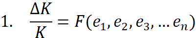
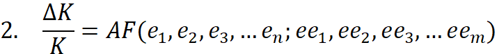

CapitalAsPower-Bichler
Created Friday 22 January 2021 (21-01-22_15-11-32)
@2021 @article
Bichler, Shimshon & Nitzan, Jonathan (2021). Unbridgeable: Why Political Economists Cannot Accept Capital as Power. Research Note, January 2021.
Kts 2009:CapitalAsPower-Nitzan
Full text
Research Note
Unbridgeable: Why Political Economists Cannot Accept Capital as Power
Shimshon Bichler and Jonathan Nitzan [1]
Jerusalem and Montreal
January 2021
bnarchives.net / Creative Commons (CC BY-NC-ND 4.0)
Building Bridges
The theory of capital as power (CasP) is radically different from conventional political economy.
In the conventional view, mainstream as well as heterodox, capital is seen a ‘real’ economic entity engaged in the production of goods and services, and capitalism is thought of as a mode of production and consumption. Finance in this approach is either a mere reflection/lubricant of the real economy (the mainstream view), or a parasitic fiction (the heterodox perspective).
CasP rejects this framework. Capital, it argues, is not a productive economic entity, but a symbolic representation of organized societal power writ large, and capitalism should be analysed not as a mode of production and consumption, but as a mode of power. In this approach, finance is neither a reflection nor a fiction, but the symbolic language that organizes and creorders – or creates the order of – capitalized power.
These are foundational claims. They go to the very heart of political economy, and they have far-reaching implications. So far-reaching, in fact, that if we accept them, we must rewrite, often from scratch, much of the theory, history and possible futures of the capitalist order.
Many have complained about CasP being aloof. Our approach, they have argued, insists on being ‘right’ – to the exclusion of all others. It shows no interest in ‘building bridges’. It dismisses neoclassical liberalism altogether, and although sometimes sympathetic to Marx, it aims not to revise Marxism, but to discard it altogether.
In this research note – excerpted and revised from our 2020 invited-then-rejected interview with Revue de la regulation – we explain the basis for these complaints and why CasP and conventional political economy cannot be easily bridged. Stated briefly, the problem is not unwillingness but built-in barriers. As it stands, political economy cannot accept capital as power. Its very foundations prevent it from doing so.
The Bifurcation
Many political economists talk and write about power, often extensively. But they are always half-hearted about it. The main reason is that capital for them is an economic entity. It is affected by power, for sure. But the effect, positive or negative, comes from the outside. As far as they are concerned, power, by and large, is inherently external to accumulation.
And this is how it was from the very beginning. From the Physiocrats onward, political economists have made it their habit to construct various ‘production functions’, as they later came be known, that explain why the economy grows and who deserves to receive what part of its output. In constructing these functions – be they qualitative or (pseudo)quantitative – they typically identify the important factors of production, (claim) to figure out their distinct productive contributions and then correlate (figuratively speaking) these (alleged) contributions with the factors’ respective incomes. Positive correlations support the current class structure of society, while negative correlations are used to trash it.
The classicists usually took the side of capital, but their theory was deficient: it treated capital as a mere auxiliary to the true factors of production, labour and land, and therefore found it difficult to rationalize profit. This glitch was eventually fixed by the neoclassicists, whose refurbished production function, courtesy of J.B. Clark, christened capital as a full-fledged third factor on par with labour and land – and then, inverting cause and effect, cited the large incomes of capitalists as ‘proof’ that the capital they owned was highly productive. . . . Contrary to the liberals, both classical and neoclassical, Marx insisted that there was only one productive factor, namely labour, and that the incomes of landlords and capitalists represented not the productive contributions of their assets (which were nil), but the economic exploitation and political oppression of their workers.
Focusing specifically on capital , we can generalize these debates with Equation 1. In this equation, accumulation is seen as a function of different factors of production – or economic inputs – with the main contention being the relevant factors to be included and the precise functional form through which they fuel the growth of capital.

By the early twentieth century, though, the debates broadened beyond the economy proper. Marxists such as Gramsci, Lukács and members of the Frankfurt School realized that, although ownership of the means of production and the production process more broadly remained paramount, the power relations associated with legitimation, and with culture more generally, were also crucial. Moreover, these power relations, the critics argued, were not mere addenda to, let alone simple derivatives of, the so-called productive base. They had their own autonomy – a point that Marcuse would later extend, dialectically, to make artistic creation the centrepiece of human autonomy more generally.
Eventually, these insights, together with the existentialist revival of the human subject and the growing disillusionment with the Soviet Union, helped breach the economic determinism of capital accumulation. If during the 1950s the Communist Party excommunicated Hegelian heretic Henri Lefebvre for daring to make ‘urban space’ – previously an aspect of the superstructure – an autonomous historical entity, by the 1970s such transmutations were no longer frowned upon. By then, Louis Althusser was already busy ‘overdetermining’ materialist history with additional, non-economic factors – including ‘ideology’, which he shifted from the superstructure over to the productive base. And this relocation, unthinkable during the Party’s Stalinist era, was just the beginning. One of Althusser’s students, Nicos Poulantzas, endowed the state with ‘relatively autonomy’, while another, Michel Foucault, abandoned economic determinism altogether in favour of ergodic power. In parallel, Dependency and World-Systems theorists such as Gundar Frank, Arghiri Emmanuel, Samir Amin and Immanuel Wallerstein anchored the history of capital accumulation and capitalism more generally in the global military expansionism of the European superpowers. The Regulation and SSA schools took these conceptual expansions a step further by adding to the equation a far broader extra-economic input – the ‘mode of regulation’ or ‘social structure of accumulation’. Similarly with institutionalism, which argues that economic agents are only partly autonomous (if at all), and that their inclinations and behaviour, rational and irrational, are shaped by the slowly evolving social institutions into which they are born.
With these multiple breaches, theorists found many more things to argue about. Accumulation nowadays is seen as determined not only by traditional economic inputs, but also by a broad range of extra-economic relations of power, all mediated through an augmented function, as shown in Equation 2:

But one thing remains unchanged. With the bygone exception of Thorstein Veblen, all users of Equation 2 – be they neo-Marxists, Gramscians, Regulationists, Dependency and World-Systems analysts, poststructuralists, institutionalists or behavioural economists – continue to treat capital itself as a productive-economic entity and its power determinants as external to accumulation proper.
The Three Foundations
Can political economists transcend this bifurcation? Can they stop thinking of power as external to accumulation proper? Can they conceive capital itself as an embodiment of power? Perhaps. But to do so, they must first jettison the key foundations of their approach.
This requirement goes back to the seventeenth and eighteenth centuries, when political economy was conceived as the first science of society. Rooted in the mechanical worldview of the new secular sciences and the capitalist contestation of feudal power, the framework of political economy was – and remains – built on three intertwined foundations: (1) a separation of economics from politics (or more broadly, a distinction between the objective world of production and wellbeing and the subjective passions of hierarchical power and violence); (2) a mechanical, self-equilibrating model of the economy; and (3) a value theory that breaks the economy into ‘real’ and ‘nominal’ spheres and uses the quantities of the former to explain those of the latter. [2] These foundations, we argue, prevent power from being fully integrated into political economy.
Foundation 1: ‘Economics’ versus ‘Politics’
The first foundation is the split between economics and politics. Most people take this duality as natural and obvious. It’s neither. Historically, the separation of economics from politics can be traced back to the twelfth century in Northern Italy and Flanders, where there emerged a new class struggle between an oligarchy of merchants and financiers in the growing burgs and the feudal nobility of the agrarian countryside. [3] The two groups represented totally different modes of power and, indeed, totally different concepts of power. Whereas the feudal mode of power legitimized hierarchical privilege sanctified by religion and backed by naked force, the nascent capitalist mode of power boasted the notion of a flat civil order based on rational productivity. While the feudal lords earned their income thorough the forceful redistribution of a fixed agricultural pie, the would-be capitalists generated theirs through the ongoing growth of industry and commerce.
Initially subservient to the feudal state within which they emerged, the burgs quickly started to demand and obtain differential exemptions – or libertates – from feudal rule. In today’s lingo, we could say that they fought to separate and liberate their bourgeois ‘economy’ from feudal ‘politics’, and it is this bygone conflict that continues to echo whenever we contrast these two terms today.
Liberals tend to see this separation in black and white: ‘economy – good; politics – bad’. And that’s hardly a caricature. In the liberal cosmology, the economy – namely the processes of production, consumption, technology, trade, prices and income – is the fertile source of society. This is the horizontal realm of individualism, utility, productivity, frugality, rationality, dynamism and freedom, the sphere where personal initiative and mutually beneficial exchange propel society forward. By contrast, politics – namely the state and its bureaucracies, the law, the police and army – is the vertical domain of authoritarianism and conformism, power and coercion, waste and irrationality, corruption and manipulation.
Prone to mischief, politics should be restricted as much as possible. Ideally, its role should be to assist the economy by providing law and order and filling in for the occasional market failure – and that’s it. In practice, though, politics always ends up doing more than it is supposed to, causing havoc in the process. According to liberals, politics as such cannot produce anything; it can only appropriate and redistribute. And since the economy is assumed efficient to start with, political intervention cannot but distort and undermine this efficiency, making the overall economic pie smaller. The obvious antidote for this mishap is laissez faire: for liberals, the best society is one with the biggest ‘free’ economy and the smallest and least ‘interventionist’ polity.
The Marxist view is different, but not entirely. Like liberals, Marxists too distinguish economics from politics (or base from superstructure). And they too see the economy, particularly production, as the prime mover of capitalism – the sphere where labour creates both the use value that sustains society and the surplus value that capitalists appropriate to propel accumulation. Unlike liberals, though, Marxists view the political sphere not as a hindering distortion, but as a built-in requirement. The formal separation of economics from politics, they argue, legally alienates private property from public control in order to ensure and legitimize the class superiority of capitalists over the rest of society. In this way, economics and politics stand as the two essential pillars of the capitalist regime – the former generates its exploitation, while the latter secures its oppression.
So, we have a rather unseemly convergence. Although liberals and Marxists reject each other’s framework, they appear to agree (albeit for different reasons) that economics and politics are – and must be – distinctly constituted, and that the economy leads with production and politics reacts with redistribution.
And the question is why? Why do political economists right and left insist on retaining the anachronistic separation of economics from politics and the notion that the former dominates the later? You can say that liberal defenders of capitalism benefit from this separation and prioritization, but what do Marxist critiques of capitalism stand to gain from upholding the same view? The answer is largely analytical. As they stand, neither school can afford to rock the boat. Without the a priori separation and pecking order of economics and politics, their ability to model – and even describe – the social reality breaks down. The reason for this breakdown relates to the second foundation of political economy: the mechanical, self-equilibrating view of the economy itself.
Foundation 2: The Self-Equilibrating Economic Machine
This view emerged together – and remains deeply interlaced – with the mechanical cosmology of the seventeenth century. Throughout history, human beings, perhaps as a way of alienating themselves from nature, have tended to politicize their cosmos, imposing on their natural environment the power structures of their own society. [4] And this politicization continues in the liberal-capitalist order.
!!! Clockwork universe
Think of the mechanical world, articulated since Machiavelli by Kepler, Galileo, Descartes, Hobbes, Locke, Hume, Leibnitz and above all Newton. The gods of this liberal cosmos represent absolute rationality, or natural law. The structure of this natural law is numerical and its language mathematical. The universe it gives rise to is flat. The particles that populate it have no inherent hierarchy. They don’t obey or submit, but freely interact through attraction and repulsion. Their actions and reactions are dictated not by a lineage of differential obligations, but by universal gravity. They are tuned not to the willful caprice of the Almighty, but to the structured relations between force and counterforce and the invisible power of equilibrating inertia.
This flat universe mirrors the flat ideals of liberal society. Reduced to its bare essentials, the liberal cosmos is a perfectly competitive market, populated by particles – or actors – each of which is too small to significantly affect the overall outcome. The actions of these particles – namely the market’s producers and consumers – are determined not by patriarchal responsibilities, but by scarcity – the gravitational force of the social universe. They are repelled from and attracted to each other not by feudal obligations, but through the universal utilitarian functions of supply and demand. And they obey not the dictates of hierarchy, but the equilibrating force of the invisible hand.
These mutual reflections help explain why politics and economics must remain distinctly constituted, and why politics must be seen as subservient to economics: if they are not, the arbitrary character of politics – and of power more generally – is bound to distort if not totally annul the rational-mathematical automaticity of the perfectly competitive economy; with mathematical rationality gone, liberals lose their universal laws of the economy and Marxists their capitalist laws of value, if not of motion; and with these laws defunct, political economy can no longer claim to be the science of society.
Foundation 3: Value Theory
The third foundation of political economy is value theory. [5] Capitalism is a system denominated, organized and regulated by prices. Any attempt to theorize capitalism hinges on the theorist’s ability to understand those prices, which is why liberalism and Marxism are each based on a specific theory of value – the utility theory of value and the labour theory of value, respectively. [6]
As they stand, both value theories rely on a basic distinction, first popularized by David Hume, between the ‘real’ and ‘nominal’ spheres of the economy. The real sphere is the domain of production and consumption, utility and wellbeing, labour and exploitation. The nominal sphere is the realm of money, prices and finance. The common assumption is that everything of import happens in the real sphere, which is why economics textbooks, both liberal and Marxist, are denominated almost exclusively in ‘real terms’. The nominal sphere is considered a mere reflection (and sometimes a facilitating lubricant) of that ‘reality’ and therefore merits little or no attention.
There is only one tiny problem: in reality, the ‘real-term’ quantities of the real economy are completely unreal. [7]
The native quantities of the real sphere are qualitatively different from each other. Apples can be measured in bushels, steel in tonnes, cars in numbers, loans in dollars and computer programmes in lines of code. [8] But these quantities have no common denominator. Apples cannot be added to loans, steel to computer programmes, and machines that make microchips to those spewing fast-food chips. And since these magnitudes cannot be added, there is no straightforward way to aggregate them into larger bundles such as ‘real investment’, ‘real GDP’ and the ‘real capital stock’.
The economists, though, remain unfazed. Every science has its own elementary particles – the units that everything else is made of – and so does the science of economics, or so they argue. The elementary particle of the liberal universe is the ‘util’, a term coined by Irving Fisher to describe the basic unit of hedonic pleasure. In the liberal world, all goods and services, regardless of their qualitative differences, can be counted in terms of the utils they generate. For instance, if a tractor generates 10 times the utils of a particular software package, its quantity is 10 times larger. And since, according to liberals, all commodities are produced and consumed for their utility, we can use their util-generating capacity, countable in universal utils, to quantify, relate and aggregate their magnitudes in ‘real’ terms. [9]
Marxists make a similar claim. Their elementary particle is SNALT, or socially necessary abstract labour time. In their view, commodities can be counted, related and added based on the SNALT it takes to produce them. In our example here, the tractor might take 10 times more SNALT to produce than the software package, and therefore has 10 times the quantity.
Armed with these universal quantities, economists then posit a quantity-to-quantity mapping, with money prices in the nominal sphere determined by the universal magnitudes of the economic reality: in the liberal utility theory of value, prices are proportionate to utils, whereas in the Marxist labour theory of value they are proportionate to SNALTs. [10] If a liberal tractor generates 10 times the utils of a software package, its price will (or should) be 10 times higher, and if a Marxist tractor takes 15 times more SNALT to make, its price will (or should) be 15 times higher.
And it is here that value theories fall into a trap – in fact, two traps. And both have to do with power.
First, even if these quantity-to-quantity value theories are correct and nominal prices are indeed determined by real quantities (and that’s a big if), this determination works only in a self-equilibrating perfectly competitive economy whose mechanical laws of supply and demand ensure that the real quantities of utils or SNALT indeed map onto actual money prices. If we deviate from this setup, though – that is, if we allow politics, social constraints and the full spectrum of power more generally into the picture – the model’s automaticity disintegrates, the real-to-nominal mapping dissipates and the utility and labour theories of value break down. Their values no longer explain prices.
And then there is the second, more basic and much more embarrassing difficulty. Unlike the underlying quantities of physics (distance, time, mass, electrical charge and heat), utils and SNALT are fictitious quanta. Of course, all quantities are creatures of our imagination. But whereas those of physics can be observed/examined directly or indirectly, utils and SNALT can never be. They are forever a matter of belief – a trait that may befit religion and postism, but has no place in science.
The issue here is not that utils and SNALT tax credulity as such; the categories of physics are often freakier. But whereas physicists continue to discuss, debate and test their categories and whether they still fit their theories – witness the relationship between the ether and light, the Higgs boson and mass, the cosmic microwave background radiation and the Big Bang, and cosmic rays and the earth’s clouds and climate – political economists no longer deliberate theirs. ‘[I]n the interest of science’, writes Albert Einstein, ‘it is necessary over and over again to engage in the critique of these fundamental concepts, in order that we may not unconsciously be ruled by them’. [11] Value theorists, though, remain unimpressed. While the underlying categories of physics are, potentially, always in flux, those of economic value haven’t changed since Karl Marx and Irving Fisher. And the reason is simple: whereas every physicist with the right equipment and creative acumen can measure and challenge the basic quantities of physics, no economist, even the most original, has ever been able to measure the util or SNALT content of any commodity whatsoever, let alone in a way that all other economists consider objective, or at least refutable.
This inability is detrimental, to put it politely: without utils and SNALT conventional political economy cannot quantify the so-called real economy; without such quantification it cannot explain prices; and without a measurable real economy and an explanation for prices, it cannot understand capitalism.
Now, if this were the case in physics – i.e., physicists trying to measure gravity without mass, or velocity without time – their theories would be scrapped in no time. But not so in political economy. Instead, political economists got used to arguing in reverse: rather than using unobservable utils and SNALT to explain readily observable nominal prices, they deploy nominal prices to explain (read justify) their utility and SNALT theories of value! Instead of positing that the util-generating capacity of commodities determines their prices, liberals claim that commodity prices reveal to us their util-generating capacity. [12] Similarly with Marxists: to get their version of this inversion, simply replace ‘util-generating capacity’ with ‘SNALT’. [13]
Of course, given that utils and SNALT cannot be observed and examined, let alone measured, these inverted claims are irrefutable. Moreover – and crucially for our purpose – since actual prices are ‘contaminated’ by politics and power more generally, there is no reason why they should be proportional to utils and SNALT to start with – although this proposition too is conveniently untestable. . . .
The Rift
!!! Clockwork universe
All in all, then, we have a foundational rift: power is everywhere and its full spectrum must be incorporated into the core of political economy – yet the very foundations of political economy make such incorporation impossible. If we fuse power at large into existing political economy, we eliminate the economy’s presumed automaticity and in so doing annul its liberal economic laws and Marx’s capitalist laws of motion. Moreover, in doing so we also pull the rug from under the util and SNALT theories of value. Finally, and most embarrassingly, we make it impossible for political economists to quantify and therefore describe their ‘real economy’ to start with.
So, as they stand, CasP and conventional political economy remain largely unbridgeable.
Endnotes
[1] Shimshon Bichler and Jonathan Nitzan teach political economy at colleges and universities in Israel and Canada, respectively. All of their publications are available for free on The Bichler & Nitzan Archives (http://bnarchives.net). Work on this interview was partly supported by SSHRC. We thank Daniel Moure for his proofreading.
[2] The origins and consequences of these foundations are articulated in Bichler and Nitzan (2012).
[3] Note that we are not siding here with the so-called ‘Smithian approach’ to the origins-of-capitalism debate – or with any of the other approaches for that matter. In fact, we are not at all concerned here with the ‘origins’ debate, which is entirely about economics (production versus trade in the early Sweezy-Dobb exchange, and forces versus relations of production in the subsequent Brenner Debate). Instead, our discussion deals with the prior question of what separated the concepts of economics and politics to start with.
[4] On the politicized cosmologies of ancient Egypt and Mesopotamia, see Frankfort et al. (1946), Kramer (1956, 1961) and Jammer (1957).
[5] Cf. Nitzan and Bichler (2009: Part II) and Bichler and Nitzan (2015).
[6] Note that only classical Marxism offers a value theory. Neo-Marxian economics has no value theory as such, while the cultural and state-theory branches of Marxism reiterate the classical version or eschew value theory altogether.
[7] For more on this unreal reality, see Nitzan (1992: Ch. 5), Nitzan and Bichler (2009: Ch. 8), Bichler and Nitzan (2015) and Fix, Bichler and Nitzan (2019).
[8] In principle, the differences can be refined further and further: there are many types of apples, steel, cars, loans and computer programmes, so each type can be differentiated and re-differentiated all the way down to its underlying molecules and atoms. These finer distinctions only strengthen our point here, so we disregard them.
[9] Note that for utils to be universally comparable and additive, consumers must be identical drones (to make their utilities interchangeable) and be possessed by income-invariant preferences (so measurement is distribution-neutral). Needless to say, these prerequisites make both liberalism and radical autonomy utterly meaningless – though it seems that users of ‘real’ economic data, including Marxists, are perfectly OK with sacrificing those ideals in order to quantify them (if that sentence makes any sense).
[10] For simplicity, we ignore here differences in Marx’s ‘organic composition of capital’.
[11] Einstein (1954: xiv).
[12] Samuelson (1938).
[13] A recent illustration is offered by Tonak (2019) in his paper ‘The Rate of Exploitation (The Case of the iPhone)’. The article, which derives its various SNALT-based Marxist categories directly from observed market prices, justifies the inversion as follows: ‘It should be pointed out that any attempt to empirically calculate Marx’s labour theory of value must necessarily make assumptions that simplify reality’, adding that, ‘In our view, however, these assumptions – such as that prices reflect values – can be justified and that these simplifications do not exaggerate the results’ (p. 31, emphasis added).
References
Bichler, Shimshon, and Jonathan Nitzan. 2012. Capital as Power: Toward a New Cosmology of Capitalism. Real-World Economics Review (61, September): 65-84.
Bichler, Shimshon, and Jonathan Nitzan. 2015. Capital Accumulation: Fiction and Reality. Real-World Economics Review (72, September 30): 47-78.
Einstein, Albert. 1954. Forward. In Concepts of Space. The History of Theories of Space in Physics, edited by M. Jammer. Cambridge, Massachusetts: Harvard University Press, pp. xi-xvi.
Fix, Blair, Shimshon Bichler, and Jonathan Nitzan. 2019. Real GDP: The Flawed Metric at the Heart of Macroeconomics. Real-World Economics Review (88, July): 51-59.
Frankfort, Henri, H. A. Groenewegen-Frankfort, John Albert Wilson, Thorkild Jacobsen, and William Andrew Irwin. 1946. The Intellectual Adventure of Ancient Man. An Essay on Speculative Thought in the Ancient Near East. Chicago: The University of Chicago press.
Jammer, Max. 1957. Concepts of Force. A Study in the Foundations of Dynamics. Cambridge: Harvard University Press.
Kramer, Samuel Noah. 1956. From the Tablets of Sumer. Twenty-Five Firsts in Man's Recorded History. Indian Hills, Colo.: Falcon's Wing Press.
Kramer, Samuel Noah. 1961. [1997]. Sumerian Mythology. A Study of Spiritual and Literary Achievement in the Third Millennium B.C. Rev. ed. Philadelphia: University of Pennsylvania Press.
Nitzan, Jonathan. 1992. Inflation as Restructuring. A Theoretical and Empirical Account of the U.S. Experience. Unpublished PhD Dissertation, Department of Economics, McGill University.
Nitzan, Jonathan, and Shimshon Bichler. 2009. Capital as Power. A Study of Order and Creorder. RIPE Series in Global Political Economy. New York and London: Routledge.
Samuelson, Paul A. 1938. A Note on the Pure Theory of Consumer's Behaviour. Economica 5 (17, February): 61-71.
Tonak, E. Ahmet. 2019. The Rate of Exploitation (The Case of the iPhone). Tricontinental: Institute for Social Research (Notebook No. 2., September): 1-40.
Backlinks: index:POLITICS:Liberalism index:POWER:Economic index:ECONOMICS:Capitalism:Criticism